Configurações do MetaTrader
Primeiras configurações
Depois da instalação da plataforma, é preciso fazer as configurações do MetaTrader para iniciar seu uso. Primeiramente é preciso entender como encontrar os ativos que quer acompanhar. Ao acessar a ferramenta pela primeira vez pode ser confuso olhar a lista de ativos na janela “Observação de Mercado”. Isto porque são exibidos muitas opções. Com o objetivo de facilitar essa visualização, você pode seguir o passo a passo abaixo:
- Primeiramente, clicar com o botão direito do mouse sobre a janela e escolher a opção “Ocultar Tudo”.
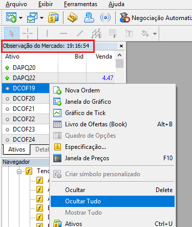
- Assim, com a lista vazia, clique sobre o item “+ click to add…” e digite o ativo que vai querer acompanhar. Pode ser ativos da B3 (ex.: PETR3, VALE3), um contrato de mini índice (ex.: WINZ18), a série contínua do mini índice (WIN$), entre outras possibilidades. Vamos ver mais detalhes sobre os contratos de mini índice e a série contínua em um dos nossos próximos vídeos.
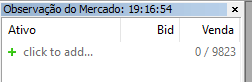
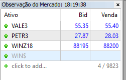
- Também é possível abrir o gráfico para um ou mais dos ativos selecionados clicando sobre ele com o botão direito do mouse e escolhendo a opção “Janela do Gráfico”.
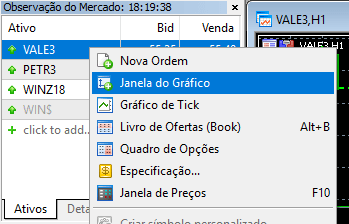
- Ao abrir várias janelas de gráfico é possível acessá-las através do menu principal, opção “Janela”, além de ter opções para organizar as mesmas (ex.: com a opção “Lado a lado”).
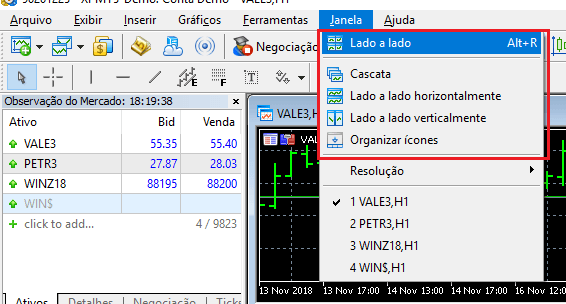
Configurações dos gráficos
Outras alterações importantes estão relacionadas com gráficos. Uma das configurações mais importantes está relacionada com o tipo de gráfico.
- Primeiramente, no menu principal do sistema selecionar a opção “Gráficos”.
- Logo depois, escolher entre as opções “Gráfico de barras”, “Gráfico de velas (Candles)” e “Gráfico de linha”.
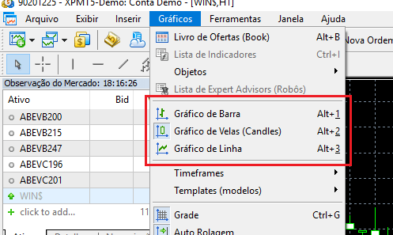
- Uma segunda opção é clicar com o botão direito do mouse sobre o gráfico. As opções exibidas são as mesmas.
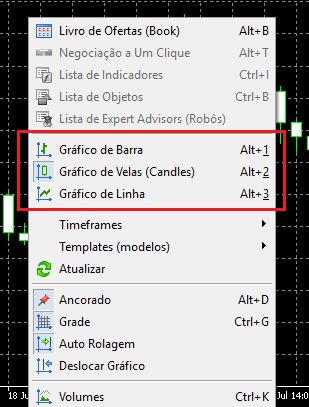
- Também é possível usar as teclas de atalho: “Alt + 1” (barra), “Alt + 2” (velas) e “Alt + 3” (linha).
Outra opção interessante relacionada às configurações do MetaTrader está relacionada com as cores do gráfico. É possível fazer diversas customizações neste sentido, como mostramos no passo a passo abaixo:
- Antes de mais nada, no menu principal selecionar a opção “Gráficos” -> “Propriedades” (ou botão direito sobre o gráfico e opção “Propriedades”).
- Logo depois, selecionar a guia “Cores”.
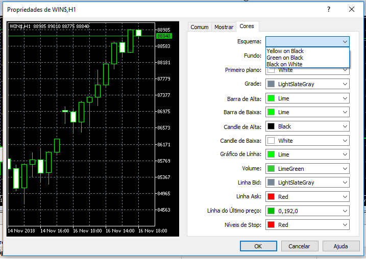
- Assim, é possível escolher um “Esquema” pré-estabelecido ou definir um novo.
- Nesse sentido, como exemplo podemos escolher o “Esquema” “Black on White” e ainda alterar as cores do “Candle de Alta” e do “Candle de Baixa”.
Salvando um template
Caso queira aproveitar as configurações do MetaTrader definidas até o momento para outros gráficos, é possível salvar como um template. Nesse sentido, o passo a passo abaixo mostra como fazer:
-
Primeiramente, clicar sobre o gráfico cujas propriedades serão definidas como template e escolher a opção “Gráficos” -> “Templates (modelos)” -> “Salvar Template…”. A opção “Templates (modelos)” -> “Salvar Template…” também fica disponível no clique com botão direito do mouse sobre o gráfico.
-
Logo depois, definir um nome para o modelo, que será salvo em diretório específico da ferramenta.
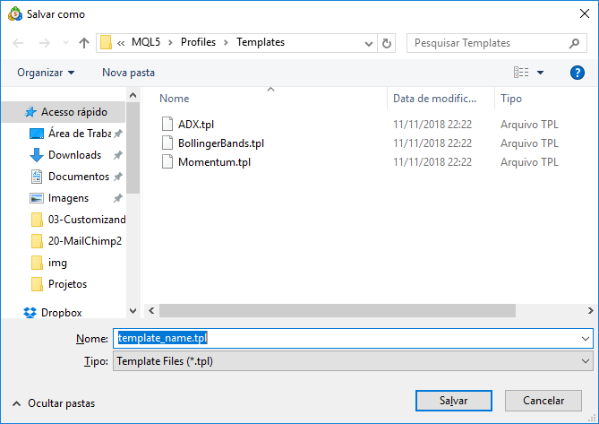
- Para definir um determinado template como padrão da ferramenta, basta nomear o mesmo como “default” no momento que for salvar.
Indicadores
Além da customização de cores, também é possível incluir indicadores no gráfico. Podemos, por exemplo, incluir o indicador de média móvel (Moving Average).
- Primeiramente, escolher no menu principal a opção “Inserir” -> “Indicadores” -> “Tendência” -> “Moving Average”.
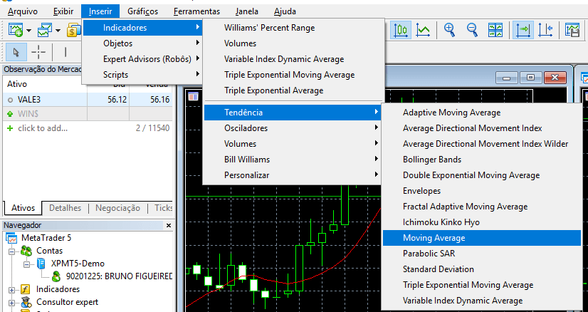
- Assim, será exibida a janela para configuração do indicador, com algumas opções como o período da média móvel e o estilo (com linha contínua, definindo largura e cor, por exemplo).
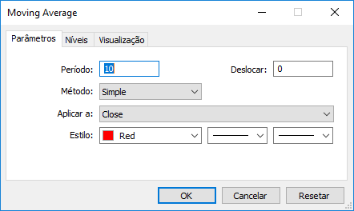
- Além disso, também é possível incluir um indicador pela janela “Navegador”. No nosso exemplo, basta expandir “Indicadores” -> “Tendência”, clicar sobre “Moving Average” e arrastar para o gráfico onde se quer usar.
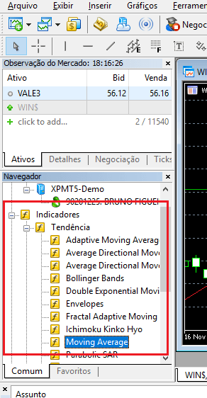
Alterando o timeframe dos gráficos
É possível ainda alterar os tempos do gráfico. Por padrão os gráficos são exibidos com intervalos de 1 hora. Para customizar, baste seguir a orientação abaixo:
- Antes de mais nada, no menu principal, opção “Gráficos” -> “Timeframes” e escolher uma das opções disponíveis.
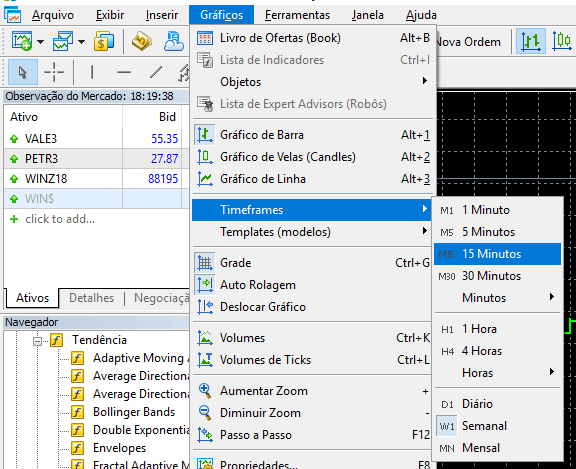
- Da mesma forma, a opção “Timeframes” também fica disponível ao clicar com botão direito do mouse sobre o gráfico.
Por fim, no vídeo abaixo mostramos em detalhes as configurações feitas neste post. Além disso, não deixe de se inscrever no canal e ativar as notificações, para ser avisado quando forem publicados novos conteúdos.